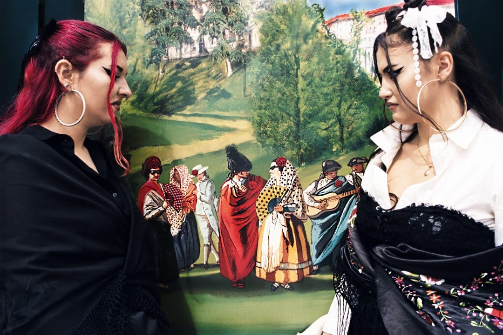
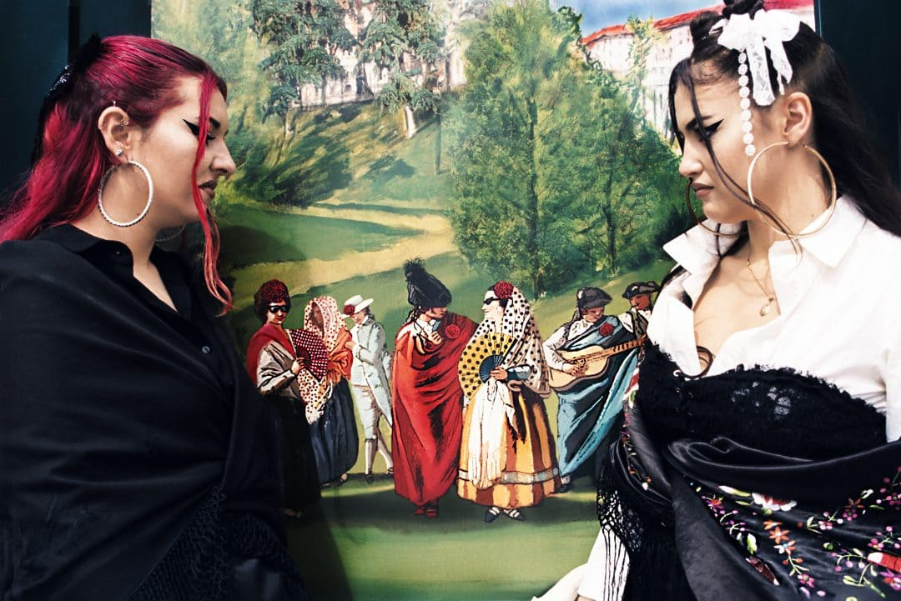

Una ciudad con encanto
Bienvenidos a Segovia, una ciudad que combina siglos de historia con una belleza natural inigualable. Declarada Patrimonio de la Humanidad por la UNESCO, Segovia es un destino donde cada rincón cuenta una historia. Desde su majestuoso Acueducto hasta el imponente Alcázar, Segovia invita a descubrir su riqueza cultural, su arquitectura única y la calidez de sus tradiciones. ¡Segovia te espera con los brazos abiertos!
¿Cómo llegar?
Sobre Segovia
Historia de Segovia
Explora los hitos más importantes que han dado forma a esta ciudad Patrimonio de la Humanidad
Siglo I d.C
Los romanos construyen el icónico Acueducto, una obra maestra de ingeniería que abasteció de agua a la ciudad durante siglos.
Siglo VIII
Durante la ocupación musulmana, Segovia fue temporalmente abandonada, aunque su muralla y ubicación estratégica permanecieron intactas.
Siglo XI
Alfonso VI reconquista Segovia y promueve su repoblación. Se construyen la muralla y las primeras iglesias románicas, sentando las bases de su legado medieval.
Siglo XIII
El Alcázar se convierte en una de las principales residencias reales. Desde sus muros, se gestionaron importantes decisiones de la monarquía castellana.
1520
Segovia se une a la Guerra de las Comunidades contra Carlos I, destacándose como uno de los focos de resistencia más importantes en Castilla.
1525
Comienza la construcción de la actual Catedral de Segovia tras la destrucción de la anterior durante la revuelta comunera. Su estilo gótico tardío es una joya arquitectónica.
1764
Carlos III impulsa la fundación de la Real Fábrica de Cristales de La Granja, convirtiendo a esta localidad en un referente de la artesanía y la industria.
1985
La UNESCO declara el casco histórico de Segovia y su Acueducto como Patrimonio de la Humanidad, reconociendo su importancia histórica y cultural.

 

Talento Curado
Fotos de la ciudad de Segovia del siglo XIX
Segovia en datos
Agenda
-
Fiesta en la Plaza Mayor
Fecha: 5 de enero de 2025
Descripción: Disfruta de una fiesta tradicional en el corazón de Segovia con música y comida local.
-
Concierto de Música Clásica
Fecha: 12 de enero de 2025
Descripción: Concierto de la Orquesta Filarmónica de Segovia en el Auditorio de la ciudad.
-
Festival Gastronómico de Segovia
Fecha: 18 de enero de 2025
Descripción: Un evento único para probar la gastronomía típica de Segovia, como el famoso cochinillo.
-
Exposición de Arte Contemporáneo
Fecha: 25 de enero de 2025
Descripción: Exposición de artistas locales e internacionales en el Museo de Arte Contemporáneo de Segovia.
-
Teatro Clásico en el Teatro Juan Bravo
Fecha: 3 de febrero de 2025
Descripción: Disfruta de una obra de teatro clásica en uno de los teatros más emblemáticos de Segovia.
Un día en segovia
Un Día Inolvidable en Segovia
Descubre cómo disfrutar al máximo de esta ciudad Patrimonio de la Humanidad, desde el amanecer hasta la noche.
Por la Mañana
Comienza tu día con un paseo por el icónico Acueducto Romano, seguido de un desayuno en una cafetería cercana como El Cochifrito con vistas al monumento. Después, visita la Catedral de Segovia y sube a su torre para admirar unas vistas espectaculares de la ciudad.
Por la Tarde
Dedica la tarde a explorar el Alcázar de Segovia, una fortaleza de cuento de hadas con una historia fascinante. Disfruta de un almuerzo típico segoviano en un restaurante cercano como Restaurante Jose María, Mesón de Cándido, o Asador Maribel probando el famoso cochinillo o cordero asado.
Por la Noche
Finaliza tu día con un paseo por las murallas iluminadas de la ciudad, disfrutando del ambiente nocturno. Si tienes tiempo, asiste a un espectáculo en el Teatro Juan Bravo o relájate con una cena ligera en una terraza con vistas como en Restaurante la Postal.
Si tienes un día más...
Merece la pena visitar los pueblos más emblemáticos de la provincia. Por la mañana, visita La Granja de San Ildefonso, famosa por su Palacio Real y jardines con fuentes monumentales. Explora las calles del pueblo y prueba las delicias locales. Por la tarde, dirígete a Sepúlveda y pasea por su casco histórico antes de aventurarte en las Hoces del Duratón, un impresionante parque natural con senderos y vistas espectaculares. Finaliza con una parada en Turégano, cuyo castillo combina elementos defensivos y religiosos, reflejando siglos de historia en un entorno único.
Opiniones
"Segovia es una ciudad maravillosa, llena de historia y cultura. El Acueducto es impresionante!"
"Los paisajes y la gastronomía son lo mejor de Segovia. El cochinillo es delicioso!"
"Un lugar encantador, lleno de historia en cada esquina. Me encantaría volver."